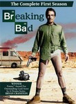
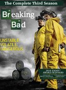
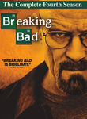

Breaking Bad
Stephen Klancher
...has seen 10
...has seen 0.2 hours
...has not seen 0.9 hours

Timeline
Most Recent:
Bit by a Dead Bee
First Unseen:
Down (# 11)
...has seen 10
...has seen 0.2 hours
...has not seen 0.9 hours
Timeline
Most Recent:
Bit by a Dead Bee
First Unseen:
Down (# 11)




